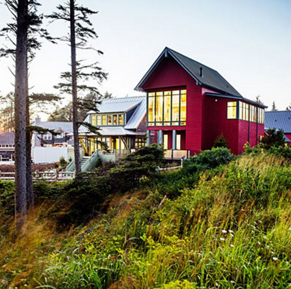
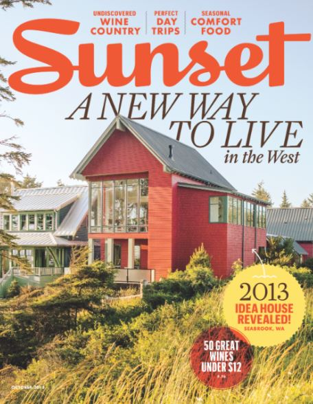
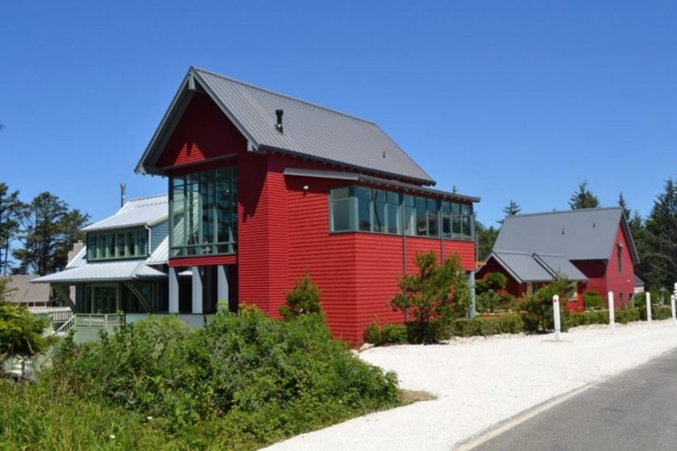

.png)
.PNG)
.PNG)
.PNG)
.PNG)
.PNG)
.JPG)
.JPG)
.PNG)
.PNG)


source
In 2013 Sunset magazine named Seabrook, Washington its Idea Town for that year – their first ever. There were a number of reasons the editors chose it, but two of the main ones were its commitment to the ecology of the area and its walkability.
source
Sunset magazine also built and featured two idea houses there that year…a small blue one which they called their Beach Bungalow and a larger red one, the Shoreview House. The larger red one is currently for sale, (here) but if you can’t buy it, it is available as a rental for guests (here.) 🙂
source
A courtyard is located between the two homes, and it has practically every outdoor amenity you will need (minus a swimming pool, but who needs that when there is an indoor community pool, and the beautiful Pacific Ocean is right outside your door?)
This outdoor grilling and dining area is adjacent to the blue bungalow.
Wouldn’t this be the perfect spot for entertaining?!
There is even a greenhouse for all you gardeners out there.
All the interiors, designed by Brian Paquette, have a very liberal use of bright color – as you can see here in the living room from the Beach Bungalow. Orange appeared in a number of spaces in the homes.

And oh my goodness at that wall of windows with the view of the Pacific Ocean here!
Here is the kitchen from the Shoreview House. I want rafters like those in the next house we build.
I thought this gallery wall art arrangement in the staircase was quite clever.
The Beach Bungalow has an artist’s studio!
More bright colors are used here in this bedroom…
and again here in the master bathroom.
And now for yet another idea house.
Before Sunset magazine had any interest in Seabrook, Coastal Living magazine had already discovered its charms. They constructed their Ultimate Beach house in the little town in 2010.
Here’s my photograph of it (there in the middle) from when we visited…
and here is a much better photograph from Coastal Living’s site. 🙂
My photo of its streetside view….
and Coastal Living’s of the same.
I also managed to walk the path that runs beside the house and take a photo of the interior of the courtyard.
Just like the Sunset houses, this one by Coastal Living is perched on the bluff that overlooks the Pacific.
As much as I like bright color, I actually liked the interiors of the Coastal Living house more. The 3200 sq. ft. house was decorated by designer Tim Clarke in natural shades of the Pacific beach area there.
This idea house has 3 floors, a guest cottage, and even a spa and media room on the lower level. It looks like shiplap walls are used throughout the home.
The kitchen is very streamlined.
When I first looked at that kitchen I wondered where they had room to store dishes with the small number of cabinets. Here’s the answer….in the built in pantry shelves.
There is a mudroom area by one of the doors for handling beach supplies.
Now let’s take a look at the bedrooms. The master has a blue ceiling, and I believe I read that the wallpaper is hand painted.
Don’t you love that painting there in the master bath?!
I thought it was perfect for the space.
Here is a guest bedroom with orange headboards.
Somehow I must have missed the notice to use orange in my decorating…hmmm.
The porch areas of the Coastal Living house are wonderful of course.
There is even one off the upstairs bedrooms. Wouldn’t it be great to sit there with a cup of coffee and just watch the waves?
I guess we can all dream, right? 🙂
And if you have a little over $2 million to invest, you can own this dream home because it too is listed for sale here. (I’m afraid we will just have to settle for enjoying renting one of the small cottages there in Seabrook.)
That wraps up the idea houses from the town, but I will have its charming shops in the next post. Then after that we will finish our tour of Seabrook with a number of interiors from some of the rentals that are a little less modern in feel than those in the idea houses. I hope you will be back to enjoy them! 🙂
Until next time…


.PNG)
Just hearing on Discover Oklahoma about Ann’s Bakery and Tulsa Botanicals Garden that you may want to visit while in. Tulsa. Have fun. Becky
Oh..I’m loving those outdoor spaces! And the views are gorgeous! Thanks for the tour! 😉
Kelly, You ALWAYS find the most interesting places. This home is beautiful and what views they must have. There are so many talented people out there in this small world of ours that can really decorate, I wish I had as much. Thanks for the tour.
Kelly, how lovely. The neutral interior is so calming and inviting. Think I prefer red to orange decor but it is all very nice. Thank you for the tour!
What an amazing trip! I love all the little details in the rooms.
Looks like a beautiful place to live.
Beautiful. I am really enjoying the tour! I wonder why both of these homes are for sale. I don’t think that I would want to leave here.
I love anything coastal! It is fun to go quickly through your posts and then go back and savor them! Loving the built-ins in the pantry, those oars, the old telephone, the unusual lamps beside the bed in the handpainted wallpaper room, the garden stools, that easel, that painting, but not so much the orange. Keep the posts coming!
Nice, nice!! And I do think your photos are every bit as good as the magazines! I can not even imagine living in a home like these— I especially like the outdoor rooms and wish I could figure out how to pull this off with the crazy weather we have in Central FL. I guess you would have to have storage and roll everything into it after each use? I have enough trouble trying to keep my screened in porch cleaned with all the sand and wind blowing off the lake. And it would be nice to have someone to clean and set it up each time!!😊
Kelly – I think I meant the Coastal Living home in my above post.
I agree with you, Kelley! Love the Southern Living house. I could also enjoy you decorating my home!!!!!!!! Lol!
My husband and I toured Southern Living’s home here in Beirmingham, Al the day it opened in June. I loved it, as well, though the kitchen was unexpected. It too, is in a planned community – Mt. Laurel. I want that same living room in my home. I need you to help! Lol! Maybe you can visit Mt Laurel before the house closes in December.
Wow, I can only imagine having the view from these houses! Much less owning the houses!! I agree, my favorite is the coastal living house too. I love the the ocean painting above the tub. This has been an enjoyable tour, Kelly. Thank you for the work you put into these posts! Now, bring on the shopping!!
I got a bit confused about the separation of the red house and the blue bungalow, which is not the same as the Coastal Living bungalow, right? All are gorgeous. Nice if you can afford it!
Kelly,
Hands down, I could move into the Coastal Living house and not change a thing. To me it’s so much more inviting with the softer color palette.
As someone who lives in Southern California and is used to seeing high RE pricing on coastal homes, I actually think the selling price on the Coastal Living house isn’t bad for it’s location and amenities. That said, I would have to win the lottery in order to afford it! 🙂
Great post, thanks for always thinking of us when you’re visiting these charming towns.
xo,
Karen
Wow, I love these posts! I was already smitten with Florida’s planned communities — Rosemary Beach, Seaside, Watercolor — and now this. I s’poze we’ll have have 2 cottage, winter in Florida + everything else in Washington.